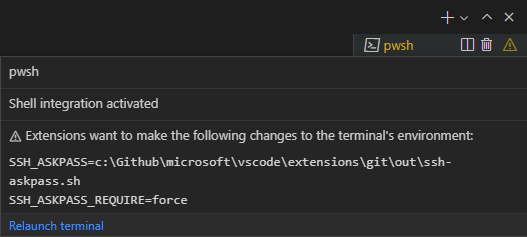

Terminal Advanced
Visual Studio Code's integrated terminal has many advanced features and settings, such as Unicode and emoji support, custom keybindings, and automatic replies. This topic explains these advanced features in detail. If you are new to VS Code or the integrated terminal, you may want to review the Terminal Basics topic first.
Persistent sessions
The terminal supports two different types of persistent sessions:
- Process reconnection: When reloading a window (for example, after installing an extension), reconnect to the previous process and restore its content.
- Process revive: When restarting VS Code, a terminal's content is restored and the process is relaunched using its original environment.
Both of these persistent sessions can be disabled by setting terminal.integrated.enablePersistentSessions to false, and the amount of scrollback restored is controlled by theterminal.integrated.persistentSessionScrollback setting. Process revive can be configured independently with terminal.integrated.persistentSessionReviveProcess.
Moving terminals between windows
Terminal tabs can be dragged and dropped between VS Code windows. This can also be done manually through the Command Palette and the Terminal: Detach Session and Terminal: Attach to Session commands.
Keybinding and the shell
As an embedded application, the integrated terminal should intercept some, but not all, keybindings dispatched within VS Code.
The configurable terminal.integrated.commandsToSkipShell setting determines which command's keybindings should always "skip the shell" and instead be handled by VS Code's keybinding system. By default, it contains a hard-coded list of commands that are integral to the VS Code experience but you can add or remove specific commands:
{
"terminal.integrated.commandsToSkipShell": [
// Ensure the toggle sidebar visibility keybinding skips the shell
"workbench.action.toggleSidebarVisibility",
// Send quick open's keybinding to the shell
"-workbench.action.quickOpen",
]
}
Look at the terminal.integrated.commandsToSkipShell setting details to see the complete list of default commands.
Tip:
terminal.integrated.sendKeybindingsToShellcan be configured to overrideterminal.integrated.commandsToSkipShelland dispatch most keybindings to the shell. Note that this will disable keybindings like Ctrl+F to open find though.
Chords
Chord keybindings are made up of two keybindings, for example Ctrl+K followed by Ctrl+C to change the line to a comment. Chords always skip the shell by default but can be disabled with terminal.integrated.allowChords.
macOS clear screen
On macOS, Cmd+K is a common keybindings in terminals to clear the screen so VS Code also respects that, which means Cmd+K chords will not work. Cmd+K chords can be enabled by removing the clear keybinding:
{
"key": "cmd+k",
"command": "-workbench.action.terminal.clear"
}
Additionally, this keyboard shortcut will be overridden automatically if any extensions contribute Cmd+K keybindings due to how keybinding priority works. To reenable the Cmd+K clear keybinding in this case, you can redefine it in user keybindings, which have a higher priority than extension keybindings:
{
"key": "cmd+k",
"command": "workbench.action.terminal.clear",
"when": "terminalFocus && terminalHasBeenCreated || terminalFocus && terminalProcessSupported"
}
Mnemonics
Using mnemonics to access VS Code's menu (for example, Alt+F for File menu) is disabled by default in the terminal as these key events are often important hotkeys in shells. Set terminal.integrated.allowMnemonics to enable mnemonics, but note that this will disallow any Alt key events to go to the shell. This setting does nothing on macOS.
Custom sequence keybindings
The workbench.action.terminal.sendSequence command can be used to send a specific sequence of text to the terminal, including escape sequences that are interpreted specially by the shell. The command enables you to send Arrow keys, Enter, cursor moves, etc.
For example, the sequence below jumps over the word to the left of the cursor (Ctrl+Left) and then presses Backspace:
{
"key": "ctrl+u",
"command": "workbench.action.terminal.sendSequence",
"args": {
"text": "\u001b[1;5D\u007f"
}
}
This feature supports variable substitution.
The sendSequence command only works with the \u0000 format for using characters via their character code (not \x00). Read more about these hex codes and terminal sequences in the following resources:
Confirmation dialogs
In order to avoid unnecessary output and user prompts, the terminal does not show warning dialogs when processes exit. If warnings are desirable, they can be configured with the following settings:
terminal.integrated.confirmOnExit- Controls whether to confirm when the window closes if there are active debug sessions.terminal.integrated.confirmOnKill- Controls whether to confirm killing terminals when they have child processes.terminal.integrated.showExitAlert- Controls whether to show the alert "The terminal process terminated with exit code" when exit code is non-zero.
Auto replies
The terminal can automatically provide a configurable input response to the shell if an exact sequence of output is received. The most common use case is to automatically reply to a prompt when hitting Ctrl+C in batch scripts that ask whether the user wants to terminate the batch job. To automatically dismiss this message, add this setting:
{
"terminal.integrated.autoReplies": {
"Terminate batch job (Y/N)": "Y\r"
}
}
Notice that the \r character used here means Enter, and much like custom sequence keybindings, this feature supports sending escape sequences to the shell.
No auto replies are configured by default as providing shell input should be an explicit action or configuration by the user.
Unicode and emoji support
The terminal has both Unicode and emoji support. When these characters are used in the terminal, there are some caveats to that support:
- Some Unicode symbols have ambiguous width that may change between Unicode versions. Currently we support Unicode version 6 and 11 widths, which can be configured with the
terminal.integrated.unicodeVersionsetting. The version specified should match the Unicode version used by the shell/operating system, otherwise there could be rendering issues. Note that the Unicode version of the shell/OS may not match the font's actual width. - Some emojis comprised of multiple characters may not render correctly, for example, skin tone modifiers.
- Emoji support is limited on Windows.
Process environment
The process environment of the application running within the terminal is influenced by various settings and extensions and can cause the output in the VS Code terminal to look different than in other terminals.
Environment inheritance
When VS Code is opened, it launches a login shell environment in order to source a shell environment. This is done because developer tools are often added to the $PATH in a shell launch script like ~/.bash_profile. By default, the terminal inherits this environment, depending on your profile shell arguments, and means that multiple profile scripts may have run, which could cause unexpected behavior.
This environment inheritance can be disabled on macOS and Linux via the terminal.integrated.inheritEnv setting.
Interaction with $LANG
There is some special interaction with the $LANG environment variable, which determines how characters are presented in the terminal. This feature is configured with the terminal.integrated.detectLocale setting:
| Value | Behavior |
|---|---|
on |
Always set $LANG to the most commonly desired value. The chosen value is based on the operating system locale (falling back to en-US) with UTF-8 encoding. |
auto (default) |
Set $LANG similar to the on behavior if $LANG is not properly configured (is not set to a UTF or EUC encoding). |
off |
Do not modify $LANG. |
Extension environment contributions
Extensions are able to contribute to terminal environments, allowing them to provide some integration with the terminal. For example, the built-in Git extension injects the GIT_ASKPASS environment variable to allow VS Code to handle authentication to a Git remote.
If an extension changes the terminal environment, any existing terminals will be relaunched if it is safe to do so, otherwise a warning will show in the terminal status. More information about the change can be viewed in the hover, which also includes a relaunch button.

Windows and ConPTY
VS Code's terminal is built on the xterm.js project to implement a Unix-style terminal that serializes all data into a string and pipes it through a "pseudoterminal". Historically, this was not how the terminal worked on Windows, which used the Console API to implement its console called 'conhost'.
An open source project called winpty was created to try to fix this issue by providing an emulation/translation layer between a Unix-style terminal and a Windows console. VS Code's terminal was originally implemented using only winpty. This was great at the time, but in 2018, Windows 10 received the ConPTY API, which took the idea pioneered by winpty and baked it into Windows, providing a more reliable and supported system to leverage Unix-style terminals and apps on Windows.
VS Code defaults to ConPTY on Windows 10+ (from build number 18309) and falls back to winpty as a legacy option for older versions of Windows. ConPTY can be explicitly disabled via the terminal.integrated.windowsEnableConpty settings but this should normally be avoided.
Since ConPTY is an emulation layer, it does come with some quirks. The most common is that ConPTY considers itself the owner of the viewport and because of that will sometimes reprint the screen. This reprinting can cause unexpected behavior such as old content displaying after running the Terminal: Clear command.
Remote development
This section outlines topics specific to when VS Code is connected to a remote machine using a VS Code Remote Development extension.
Reducing remote input latency
Local echo is a feature that helps mitigate the effect of input latency on remote windows. It writes the keystrokes in the terminal in a dimmed color before the result is confirmed by the remote. By default, the feature start running when latency is detected to be above 30 ms and the timing can be configured with terminal.integrated.localEchoLatencyThreshold. The color of the unconfirmed characters is defined by terminal.integrated.localEchoStyle.
Local echo disables itself dynamically depending on the active program in the terminal. This is controlled by terminal.integrated.localEchoExcludePrograms, which defaults to ['vim', 'vi', 'nano', 'tmux']. It's recommended that you disable the feature for any application or shell that is highly dynamic and/or does a lot of reprinting of the screen when typing.
To disable the feature completely, use:
{
"terminal.integrated.localEchoEnabled": false
}
Local terminals in remote windows
The default local terminal profile can be launched in remote windows with the Terminal: Create New Integrated Terminal (Local) command via the Command Palette. Currently non-default profiles cannot be launched from remote windows.